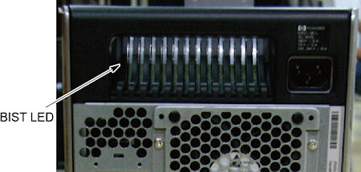

Operating Documentation
Direction 5193574-800, Rev# 22
LightSpeed 7.X Service Methods
Module Version 2.0, Version Date 2/11/15
Operating Documentation |
| Last Revised: | 07 June 2013 |
The follow information assists in confirming if the HP Z820 Host PC is experiencing a hardware fault. Although the following is not a complete set of diagnostics, it should be sufficient in determining if the Z820 is suffering from hardware issues at the prescribed Field Replaceable Unit (FRU) level.
Obtain complete diagnostic details for the HP Z820 PC from Hewlett Packard’s support web site: http://www.hp.com/sbso/busproducts-workstations.html
Search by PC model number and download the appropriate Technical Reference Guide.
| ||||
| ELECTROCUTION HAZARD | ||||
| there is power to the system board even when the Host PC is powered down. | ||||
| per PROPER LOCKOUT / TAGOUT PROCEDURES, Disconnect AC power from the Host PC before reseating or replacing components. |
Before proceeding with the rest of this procedure, use the following checklist to find possible solutions for Host PC problems:
Are the Host PC and Monitors connected to a working electrical outlet?
Is the Host PC powered on?
Is the front panel green power light illuminated?
Are the monitors powered on?
Are the blue monitor lights illuminated?
Adjust the monitor brightness and contrast controls if the monitor is dim.
Press and hold any key. If the Host PC beeps, then the keyboard is operating correctly.
Examine all cables for loose or incorrect connections.
Remove all diskettes and CDs from the drives before you power on the system.
Are you running the latest BIOS version and have correct BIOS Settings?
The Z820 has a special LED mounted just inside the PSU rear ventilation grill. When the Built In Self Test (BIST) LED is green, the PSU is operational. (See Illustration 1.)
Illustration 1: BIST PSU LED

Table 1: Z820 Power Supply Problems (BIST LED)
| Problem | Cause | Solution |
| Power supply shuts down intermittently. | Power supply fault | Replace Host PC. |
| Workstation powered off automatically and the Power LED flashes red two times, once every second, followed by a two-second pause. | Processor thermal protection activated OR Fan(s) blocked or not turning OR CPU heatsink fan assembly not properly attached to the processor |
|
| Power LED flashes red, once every two seconds. | Power failure (power supply overloaded) |
|
Observe these conditions over time. If this situation repeats regularly, the Host PC’s PSU or hardware is faulty. Replace the Host PC FRU. If these conditions happen rarely, look for Power and AC connection issues.
The Power LED above the Power On/Off button has the following states:
| Color | Host PC State |
| None | Off OR Hibernate(not used) |
| Solid Blue | On |
| Flashing Blue (once per second) | Standby (not used) |
| Solid or Flashing Red | Error |
Table 2: Z820 Front Panel Power LED and Beep Code
| Power LED and Sound Activity | Diagnosis and Service Action |
| None | Power supply failure
|
| Blinks red 2 times, once per second, then 2 second pause, 2 beeps | Thermal shutdown
|
| Blinks red 3 times, once per second, then 2 second pause, 3 beeps | CPU not installed
|
| Blinks red 4 times, once per second, then 2 second pause, 4 beeps | Power supply failure
|
| Blinks red 5 times, once per second, then 2 second pause, 5 beeps | Pre-video memory error
|
| Blinks red 6 times, once per second, then 2 second pause, 6 beeps | Pre-video graphics card error. For systems with graphics cards, do the following:
|
| Blinks red 7 times, once per second, then 2 second pause, 7 beeps. | System board failure (ROM detected failure before video).
|
| Blinks red 8 times, once per second, then 2 second pause, 8 beeps | Invalid ROM based on bad checksum
|
| Blinks red 9 times, once per second, then 2 second pause, 9 beeps | System power is on but unable to boot. Replace the Host PC. |
The Disk Activity LED below the Power On/Off button flickers whenever the system is accessing either hard drive.
The network activity LEDs at the rear of the Host PC chassis (including both the onboard network port and the two Dual Port GBe card ports) flicker whenever there is network activity on that port. These LEDs remain a solid light as long as the system is plugged into AC power with the power switch on and connected to other live Ethernet ports.
POST is a program run at startup that initializes and runs various tests on installed hardware. An audible and/or visual message occurs if the POST encounters a problem.
All errors are reported on the POST screen at the end of POST, before booting the OS. If there are any Fatal or Uncorrectable Non-Fatal errors reported, you are presented with an F1 Boot prompt. This ensures that the system doesn't boot before you are able to see the errors.
| NOTE: | The errors displayed are from the previous boot. They occurred before the most recent reboot, or they caused the most recent reboot. |
HP Z820 POST Error Messages
POST checks the following items to ensure that the computer system is functioning properly:
Keyboard
DIMMs
Diskette drives
All mass storage devices
CPUs
Controllers
Fans
Temperature sensors
Cables (front/rear panels, audio, and USB ports)
The table shown next describes the POST error messages.
Table 3: Z820 POST Error Messages
| Screen Message | Probable Cause | Recommended Action | |
|---|---|---|---|
| 102-System Board Failure | Potential system board problem; contact HP Support. | ||
| 110-Out of Memory for Option ROMs. | Option ROM for a device could not run because of memory constraints. | Run Computer Setup <F10>Utility to disable unneeded option ROMs, and to enable ACPI/USB Buffers at Top of Memory. | |
| 161-Real-Time Clock Power Loss |
| ||
| 162-System Options Error |
| ||
| 163-Time and Date Not Set |
|
| |
| 164-Memory Size Error | Memory configuration is incorrect. | Confirm that the correct memory is installed in the system. | |
| 201-Memory Error | RAM failure. |
| |
| 214-DIMM Configuration Warning | DIMMs not installed correctly (not paired correctly). | See the service label on the computer access panel for the correct memory configurations, and reseat the DIMMs accordingly. | |
| 301-Keyboard Error. | Keyboard failure. |
| |
| 303-Keyboard Controller Error | I/O board keyboard controller is defective or is not set properly. |
| |
| 304-Keyboard or System Unit Error | Keyboard failure. |
| |
| 510-Splash Screen image corrupted | Splash Screen image has errors | Update system BIOS/UEFI. | |
| 511-CPU Fan not detected | Fan is not connected or is defective. |
| |
| 512- Rear chassis fan not detected | Fan missing, disconnected, or defective. |
| |
| 513- Front Chassis fan not detected | Front fan missing, disconnected, or defective. |
| |
| 514- Power supply wattage insufficient for hardware configuration | Computer configuration requires more power than the power supply can provide | Reduce the computer power consumption. | |
| 515- Power supply fan not detected | Power supply fan is disconnected or defective. |
| |
| 517- Memory fan not detected | Memory fan missing, disconnected, or defective. |
| |
| 518- PCI fan not detected | PCI fan missing, disconnected, or defective. |
| |
| 519-Hard drive fan not detected | Hard drive fan missing, disconnected, or defective. |
| |
| 520- Memory fan (2) not detected | Memory fan (2) missing, disconnected, or defective. |
| |
| 521- Memory fan (3) not detected | Memory fan (3) missing, disconnected, or defective. |
| |
| 522- Memory fan (4) not detected | Memory fan (4) missing, disconnected, or defective. |
| |
| 523- CPU fan (2) not detected | CPU fan (2) missing, disconnected, or defective. |
| |
| 524- Rear chassis fan (2) not detected | Rear chassis fan (2) missing, disconnected, or defective. |
| |
| 525- Front chassis fan (2) not detected | Front chassis fan (2) missing, disconnected, or defective. |
| |
| 526- CPU Liquid Cooling pump not detected | Liquid cooling pump on CPU1 is not detected. |
| |
| 527- CPU Liquid Cooling pump (2) not detected | Liquid cooling pump on CPU2 is not detected. |
| |
| 528- CPU requires Liquid Cooling solution | Invalid system configuration. |
| |
| 529- Unsupported WiFi Device(s) Detected | An unsupported WiFi device has been installed into an internal slot. | Remove the unsupported device. | |
| 917-Front Audio Not Connected | Front Audio mechanism is missing or is not connected. |
| |
| 918-Front USB Not Connected | Front USB mechanism is missing or is not connected. |
| |
| 921-Front USB Not Connected | Front USB mechanism is missing or is not connected. |
| |
| 922-Front USB 2 Not Connected | Front USB 2 mechanism is missing or is not connected. |
| |
| 923- Fatal IRPP error. | Potential system problem; contact HP Support. | ||
| 924- Fatal IIO error. | Potential system problem; contact HP Support. | ||
| 925- Fatal Misc. Error | A fatal miscellaneous chipset error is selected. | ||
| 927- Fatal error on DIMM in slot CPU X DIMM Y | Fatal multibit ECC error detected on the DIMM in the slot labeled DIMM Y(where Y is a number), as labeled on the system board. | Replace the DIMM in the identified slot. | |
| 928- Fatal error occurred in the designated slot. | Fatal error occurred in the designated slot. | Move the card to a different slot. If the problem persists, replace the card. | |
| 929- Fatal MCA Error | An MCA condition is detected on the system. | ||
| 939- Front USB 3.0 Not Connected | Front USB 3.0 mechanism is missing or is not connected. |
| |
| 940- Front 1394 Not Connected | Front 1394 mechanism is missing or is not connected. |
| |
| 941- PCIe Device(s) installed in slots 3 or 4 with a single CPU | Invalid system configuration. |
| |
| 942- Memory Train Error | A DIMM or DIMMs did not train correctly. | ||
| 1801- Microcode Update Error | Unknown or unsupported processor stepping. | The microcode update failed. If the processor stepping is supported, contact HP Support. | |
| 1802- Processor Not Supported | The system board does not support the processor. | Replace the processor with a compatible one. | |
| Invalid Electronic Serial Number | Electronic serial number has become corrupted. |
| |
| Network Server Mode Active and No Keyboard Attached | Keyboard not detected. | Verify that a keyboard is attached. |